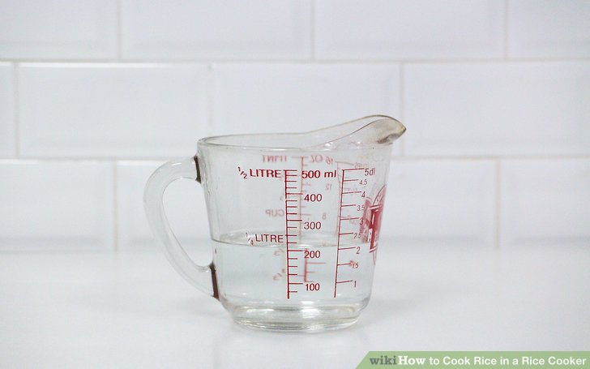
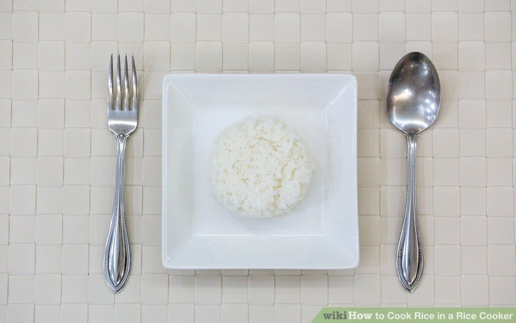

Using a rice cooker is a simple and effective way to cook rice. Many rice cookers keep the rice warm after it's cooked. There's no need to watch the rice cooker since this appliance comes with an automatic timer that clicks when the rice is ready. This article will show you how to cook rice with a rice cooker so that you can minimize the chance of burnt rice and ruined pots. If you still encounter problems, consult the troubleshooting guide.
Method One: Cooking the Rice
-
Measure the rice with a cup and put it into your cooking pot. Some rice cookers have a removable bowl or pot, while others must have the rice placed directly in the cooker. Most of the time, rice cookers will come with a measuring "cup" or scoop that can fit 3/4 cup (180 mL). Alternatively, use an ordinary measuring cup.
One cup (240 mL) of uncooked rice will generate anywhere from 1 1/2 cups (360 mL) to three cups (720 mL) of cooked rice, depending on variety. [1] Leave enough space for this expansion to prevent the rice cooker from spilling over..
Rinse the rice if necessary. Many people prefer to rinse rice in order to remove any pesticides, herbicides, or contaminants that may be present. Some less modern milling practices also create broken grains that release excess starch into the rice, which needs to be rinsed off to prevent the rice clumping together. If you decide to rinse the rice, pour drinking water into the bowl or hold it under the faucet. Stir as you add the water, until the rice is fully submerged. Drain water through a sieve or tip the bowl slowly while catching fallen rice grains with your hand. If the water looks discolored or filled with floating bits of broken rice or dirt, rinse a second or third time until new water added looks relatively clear.
White rice sold in the United States is required by law to be enriched with powdered iron, niacin, thiamin, or folic acid; these vitamins and minerals are usually removed by washing.
If your rice cooker has a non-stick bowl, wash the rice (prior to cooking) in a colander with several washes/rinses/drains. Replacement non-stick bowls are very expensive.
Measure the water. Most rice cooker instructions recommend cold water. How much water you add depends on what kind of rice you're cooking and how moist you prefer it. There are often graduated marks on the inside of a rice cooker, indicating how much rice and water should be added, or instructions on the package of rice. Alternatively, use the following suggested amounts depending on your variety of rice, but keep in mind you can always adjust these in future if you prefer your rice more chewy or soft:
White, long grain - 1 3/4 cups of water per 1 cup of rice (420 mL water per 240 mL rice)
White, medium grain - 1 1/2 cups of water per 1 cup of rice (360 mL water per 240 mL rice)
White, short grain - 1 1/4 cups of water per 1 cup of rice (300 mL water per 240 mL rice)
TBrown, long grain - 2 1/4 cups of water per 1 cup of rice (520 mL water per 240 mL rice).
Sold as "parboiled" (not half-cooked at home) - 2 cups of water per 1 cup of rice
For Indian style rices like Basmati or Jasmine, less water is needed as a drier rice is desired, use no more than 1 1/2 cups of water per 1 cup of rice. Use only 1 to 1 if you washed the rice previously. It is ok to add bay leaves or cardamom pods directly to the rice cooker to enhance the flavor.
Soak the rice for thirty minutes, if desired. This is not required, but some people soak the rice to shorten the cooking time. Soaking may also make the cooked rice stickier. Use the amount of water measured earlier to soak the rice at room temperature, then use this same water for cooking.
Add flavorings (optional). Flavorings should be added to the water before you start the rice cooker, so the rice will absorb these flavors during cooking. Many people prefer to add a little bit of salt for flavor at this time. Butter or oil are another common option. If you are making Indian style rice, you may wish to add a few cardamom seeds or a bay leaf.
Push the rice grains off the sides and under the water level. Use a wooden or plastic utensil to move any rice grains around the pot back into the water. Rice left above the water surface may burn during cooking. If water or rice spilled over the edge, wipe the outside of the pot with a cloth or rag.
Sou do not need to stir the rice under the water level. This may release excess starch and result in clumpier or stickier rice.
Check your rice cooker for special options. Some rice cookers simply have an on/off switch. Others have different settings for brown or white rice, or the ability to delay the cooking until a specified time period has passed. You are unlikely to run into problems if you just go with the basic settings, but it's a good idea to figure out what each button or option does if possible.
Cook the rice in the rice cooker. If your rice cooker has a removable cooking pot, place the pot of rice and water back into the rice cooker. Close the lid of the cooker, plug the cooker in, and press the switch to turn it on. The switch will click, like a toaster, when the rice is done. In most rice cookers, the rice will be warmed until you unplug the cooker.
Don't lift the lid to check on the rice. The cooking process depends on the development of steam inside the pot, so letting steam escape by opening the lid may result in improperly cooked rice.
The rice cooker automatically turns off when the temperature inside the pot exceeds waters boiling point (212 degrees F or 100 degrees C at sea level), which will not happen until all the free water has vaporized.
Allow the rice to "rest" for 10-15 minutes before removing the lid (optional). This is not required but is commonly recommended in rice cooker instructions, and is automatic in some models. Unplugging the rice cooker or taking the pot off of the heat for this period will minimize the amount of rice that sticks to the pot.
Fluff and serve. Once there is no water left, the rice should be ready to eat. Using a fork or other utensil to stir the rice after cooking will break up clumps and release steam, preventing the rice from overcooking.


Method Two: Outdoors
-

-
Reduce water levels next time if the rice is mushy. Next time you make rice, use 1/4–1/2 cup (30–60 mL) less water per cup (240 mL) of rice. This should cook the rice for a shorter period of time, and give it less water to absorb.
Add more water and cook on the stove if the rice is undercooked. If the rice turns out too chewy or dry for your liking, move it to the stovetop with 1/4 cup (30 mL) of water. Cook covered for a few minutes to steam the rice.
Adding it back to the rice cooker without enough water to cover it could result in burning, or the rice cooker failing to turn on.
Next time, simply add about 1/4–1/2 cup (30–60mL) of water per cup (240 mL) rice to the rice cooker before you turn it on.
Remove rice promptly after cooking if the rice is frequently burned. A working rice cooker shouldn't burn rice during the cooking, but if left in "warming" mode, the rice at the bottom and sides can get burned. If this happens often, remove rice from the cooker as soon as you hear the "click" signifying it is done (or when the warming light goes on).
On some cookers, you can turn off the warming option entirely, but in this case, you should still eat or refrigerate the rice before it cools to reduce the risk of food poisoning.
If you are cooking other ingredients with the rice, those can burn during cooking. Next time, remove any sugary ingredients and cook separately, or any ingredients that you notice burning.
Find a use for overcooked rice. Mushy, split grains can still be tasty if used in the right recipe.[3] Consider these options to make the mushy texture less noticeable:
Fry it to remove that excess moisture
Turn it into a sweet dessert
Add it to any soup, baby food, or homemade meatballs
Adjust for altitude. If you live at 3,000 feet (910 m) or above, you may notice your rice ends up undercooked. If this happens, add an extra 1/4–1/2 cup of water per cup of rice (30–60 mL water per 240 mL rice). The lower air pressure at high altitude causes water to boil at a lower temperature, so the rice will take longer to cook. The more water you add to a rice cooker, the longer it will continue to cook.
Consult the rice cooker instructions or contact the manufacturer if you cannot find the correct amount of additional water. The amount necessary varies with altitude.
Deal with leftover water. If there is water left over in a rice cooker after it's finished cooking, the rice cooker model is likely defective and may need to be replaced. For the current batch of rice, drain the water and serve if the rice texture suits your preferences. Otherwise, turn the rice cooker back on until the water is used up.

Finished